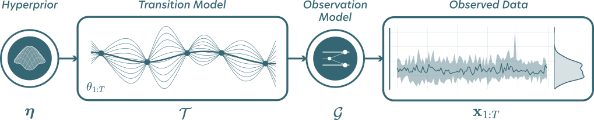

Superstats#
Superstats is a Python library for simulation and Bayesian estimation of dynamic models with time-varying parameters.
The library aims to be domain-agnostic, but for now focuses on cognitive modeling. It provides users with:
A lean API for non-stationary models: specify which parameters change across time, and how.
A library of transition models: random walks, ARs, levy flights, jump processes, mixtures, and Gaussian processes.
Built-in cognitive models, plus a plug-in interface for any simulator of your own.
Amortized Bayesian inference built on top of BayesFlow: train once, then quickly fit every data set.
Diagnostics and visualization tools for every critical step in a principled Bayesian workflow.
Conceptual overview#

A superstatistical model has two levels. A low-level observation model \(\mathcal{G}\) generates the data at each time step. A high-level transition model \(\mathcal{T}\) describes how the parameters of that model evolve:
Superstats trains a neural estimator on simulations from any generative model of this form and returns the joint posterior \(p(\theta_{1:T}, \eta, \lambda \mid x_{1:T})\) over all time-varying parameters \(\theta_{1:T}\) and time-invariant parameters \((\eta, \lambda)\).
Install
We support Python 3.12 to 3.13. Install the latest version from source:
pip install superstats
If you want the latest features, you can install from source:
pip install git+https://github.com/LuSchumacher/superstats.git@dev
Deep learning backend
Per default, superstats installs JAX on Linux/MacOS machines and PyTorch on Windows machines. This is because JAX does not natively support GPU acceleration on Windows. You can also manually install and configure any of the three backends:
Getting started
A complete workflow using a diffusion decision model whose drift rate and thresold are free to vary across time:
import superstats as sup
# 1. Assume which parameters move, and how
joint_prior = sup.JointPrior(
v=sup.transition.RandomWalk(), a=sup.transition.RandomWalk(), tau=sup.Prior(dist="halfnormal", scale=0.15), bias=0.5
)
# 2. Plug in an observation model (any simulator will do)
generative_model = sup.GenerativeModel(
prior=joint_prior, model=sup.simulation.sample_ddm, missing="random", contamination="random_choice"
)
# 3. Train a neural approximator
workflow = sup.Workflow(simulator=generative_model)
history = workflow.fit_online(num_steps=100, epochs=20, batch_size=16)
# 4. Fit any number of data sets, instantly
samples = workflow.sample(data=rt_data, num_samples=250)
It is highly recommended to use a GPU for fast training and inference. For an in-depth exposition, check out the examples below.
Contributing
Contributions are welcome. Install from source and see CONTRIBUTING.md for details.
Reporting issues
Please open an issue on GitHub for bug reports and feature requests. For questions about the underlying inference machinery, the BayesFlow Forums are a good place to ask.
Citation
If you use Superstats in your research, please cite:
@article{schumacher2023neural,
title = {Neural superstatistics for {B}ayesian estimation of dynamic cognitive models},
author = {Schumacher, Lukas and B{\"u}rkner, Paul-Christian and Voss, Andreas and K{\"o}the, Ullrich and Radev, Stefan T.},
journal = {Scientific Reports},
volume = {13},
number = {1},
pages = {13778},
year = {2023},
doi = {10.1038/s41598-023-40278-3}
}
@article{schumacher2025validation,
title = {Validation and comparison of non-stationary cognitive models: A diffusion model application},
author = {Schumacher, Lukas and Schnuerch, Martin and Voss, Andreas and Radev, Stefan T.},
journal = {Computational Brain \& Behavior},
volume = {8},
number = {2},
pages = {191--210},
year = {2025},
doi = {10.1007/s42113-024-00218-4}
}
License
MIT